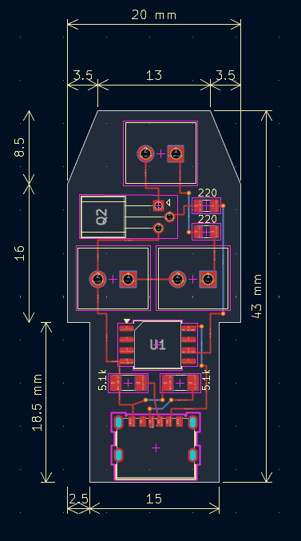
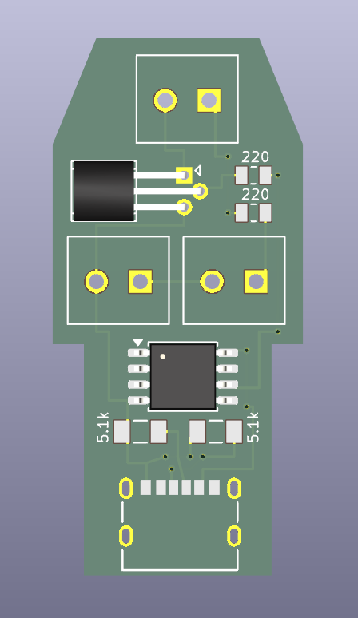
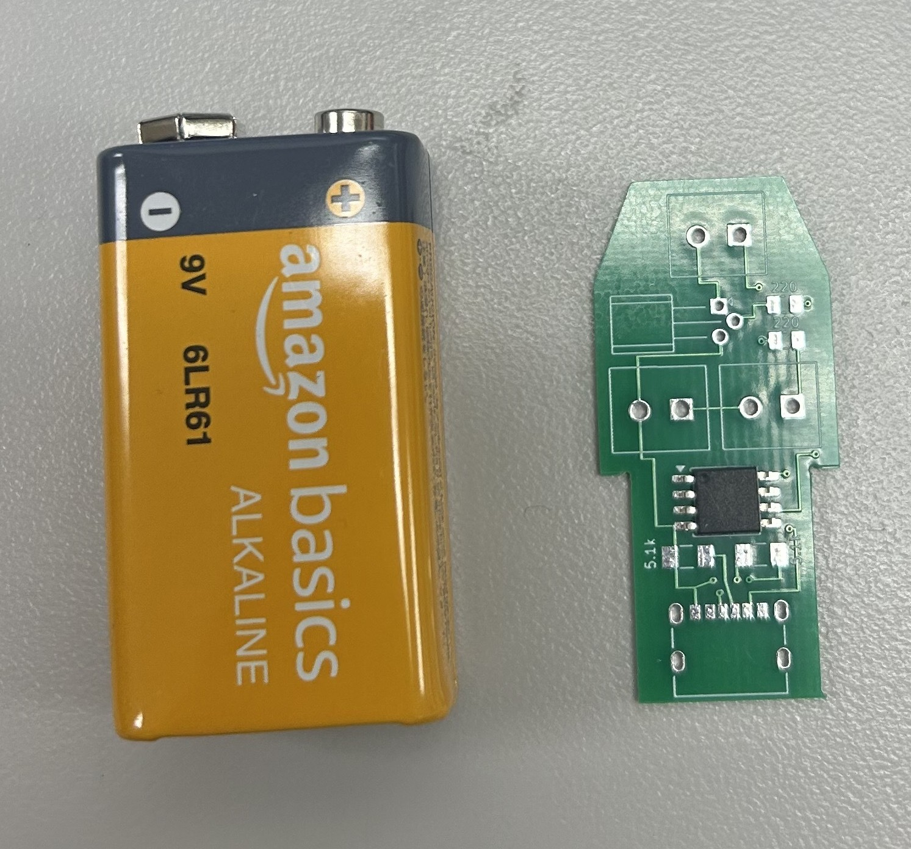
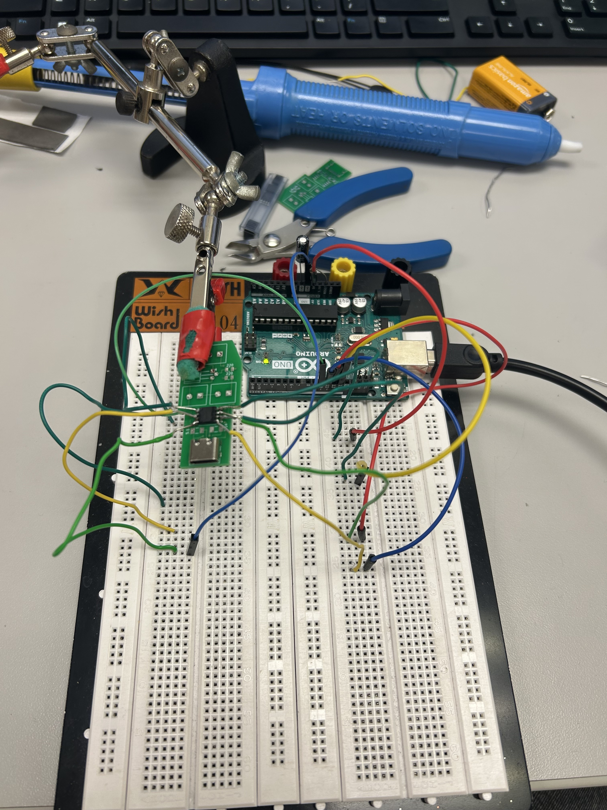
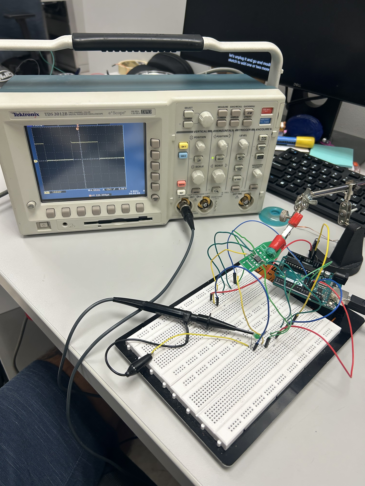

Custom PCB Design
Using KiCAD I designed a custom PCB to power and operate flickering infrared glasses used in research.
Project Goal
To power and operate a wearable pair of eye glasses that flicker infrared LEDs. The footprint needed to be as small as possible to fit within the design constraints of the frame. Wanted to keep the circuit as similar to the breadboard design, so large 9V batteries were used which further restricted space. Since this was to be used with human participants, important saftey limitations on infrared exposure were also considered.
Project Purpose
To be used in multiple labs at the University of Florida to investigate nerual response to infrared light flickering at various frequencies.
Design & Process






Project Outcome
PCB was successfully assembled, operated as expected, and fit into the glasses frame neatly.